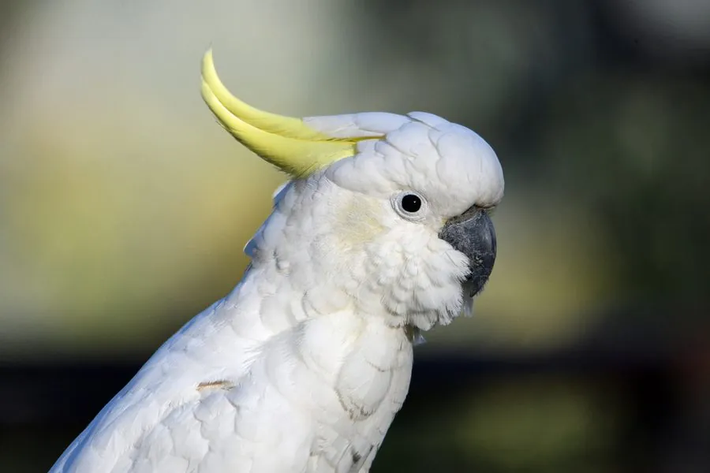

鸟类 · 动物界
葵花凤头鹦鹉 Cacatua galerita

全身雪白、头顶竖着黄色冠羽的大型鹦鹉，聪明活泼，是澳大利亚常见的鹦鹉，也是全球热门的宠物鸟。
- 分类
- 门脊索动物门纲鸟纲目鹦形目科凤头鹦鹉科属凤头鹦鹉属
- 栖息环境
- 森林、林地、农田、河岸与城市公园，营巢于高大乔木的树洞
- 地理分布
- 澳大利亚北部、东部和东南部及新几内亚部分岛屿，中国无野生分布
- 保护级别
- IUCN 无危（LC）；澳大利亚特有种，中国无野生分布
物种志
葵花凤头鹦鹉体长 45–55 cm，体重约 0.8–1 kg，是体形较大的鹦鹉。全身羽毛雪白，头顶有一簇向后弯曲的柠檬黄色冠羽，兴奋或受惊时会像扇子一样竖起；喙黑色而粗壮，眼睛周围有一圈蓝白色裸皮，脚灰色。雌鸟的虹膜偏红褐色，雄鸟偏黑。
葵花凤头鹦鹉分布于澳大利亚北部、东部和东南部，以及新几内亚部分岛屿，栖息在森林、林地、农田和城市公园。它们以种子、坚果、果实、根茎和昆虫为食，常成群在地面觅食，也会到农田中取食谷物。这种鹦鹉非常聪明，能学会多种技巧和模仿声音，寿命可长达数十年。繁殖期在树洞中产卵，每窝 2–3 枚，孵化约 25–27 天。由于宠物贸易捕捉和栖息地减少，野生种群受到一定压力，目前被列为无危物种。
形态与习性
- 食性种子、坚果、果实、根茎和昆虫
- 体长45–55 cm
- 体重约 0.8–1 kg
- 繁殖每窝 2–3 枚卵，孵化约 25–27 天
- 寿命可活 50 年以上
- 智力能学会开锁、拧螺丝等复杂动作
- 冠羽柠檬黄色冠羽，兴奋时像扇子一样竖起
趣味知识
- 葵花凤头鹦鹉的黄色冠羽平时收拢，兴奋时会像扇子一样竖起来。
- 它们能活 50 年以上，是寿命很长的宠物鸟。
- 葵花凤头鹦鹉智力很高，能学会开锁、拧螺丝等动作。
- 野生种群常成群在农田觅食，被当地农民视为害鸟。